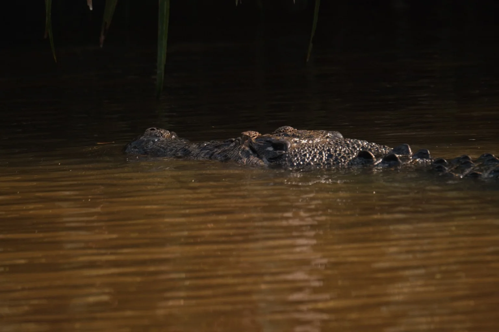
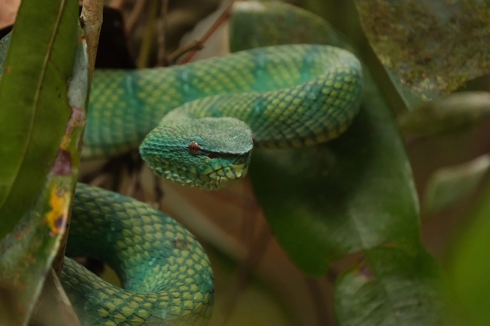
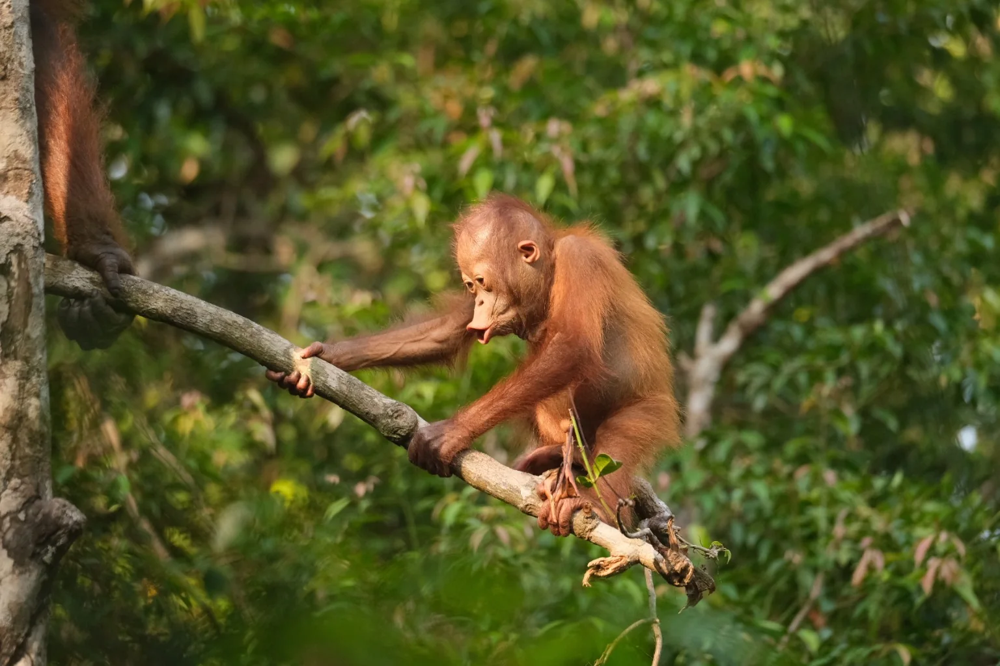

01 / LANDSCAPE
CENTRAL BORNEO · INDONESIA
Jelajahi jantung Kalimantan melalui sungai, hutan hujan tropis, dan perjumpaan berkesan dengan kehidupan liar.
Jelajahi perjalanan ↗01 — THE SPIRIT OF BORNEO
Borneo Wild Capture mengajak Anda mengenal keindahan Taman Nasional Tanjung Puting dengan cara yang lebih dekat, personal, dan bertanggung jawab.
Dari perjalanan menyusuri sungai hingga menjelajahi hutan tropis, setiap perjalanan adalah kesempatan untuk memahami kekayaan alam Kalimantan.
02 — THE EXPERIENCE
Perjalanan yang mempertemukan Anda dengan lanskap dan kehidupan liar Borneo.



03 — YOUR JOURNEY
Susuri sungai, nikmati suasana hutan, dan temukan kisah alam Kalimantan dalam perjalanan yang dirancang sesuai kebutuhan Anda.
04 — FIELD NOTES
Setiap sudut menyimpan cerita. Inilah sedikit gambaran tentang dunia yang menanti untuk dijelajahi.



Galeri foto perjalanan akan terus diperbarui.
YOUR BORNEO STORY STARTS HERE
Mulai rencanakan perjalanan Anda bersama Borneo Wild Capture.
Hubungi kami via WhatsApp ↗